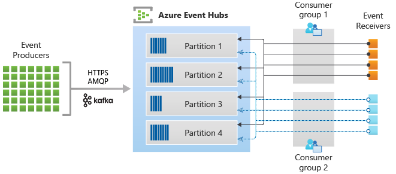
Azure Event Hubs is a big data streaming platform and event ingestion service. It can receive and process millions of events per second. Data sent to an event hub can be transformed and stored by using any real-time analytics provider or batching/storage adapters.
While there's currently no MuleSoft connector for Azure Event Hubs, you can connect using other methods. In this codelab, you'll learn two ways to connect using out-of-the-box connectors with MuleSoft and Anypoint Studio. The first way will be with the Kafka Connector. The second will leverage the REST APIs that are exposed from Azure Event Hubs.
If you don't have Event Hubs set up yet, here are the steps. Login to Azure and go to Event Hubs. Click on Create to create the Event Hub namespace.
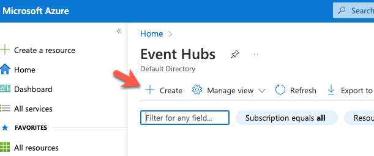
When creating the namespace, be sure to select Standard or higher for the Pricing Tier, otherwise the Kafka connection won't work.
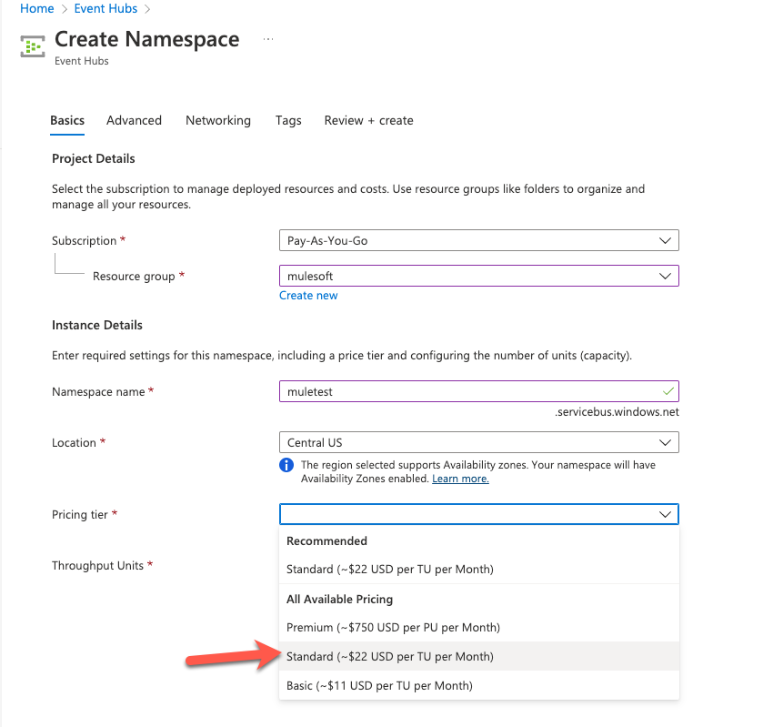
Once the namespace has been created, create the Event Hub
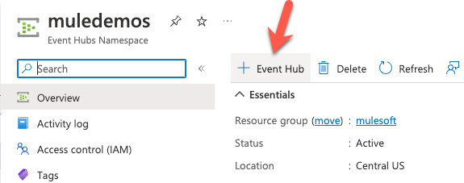
Before we switch over to MuleSoft Anypoint Studio, click on Shared Access Policies on the left hand navigation bar. Click on the default policy (e.g. RootManageSharedAccessKey)
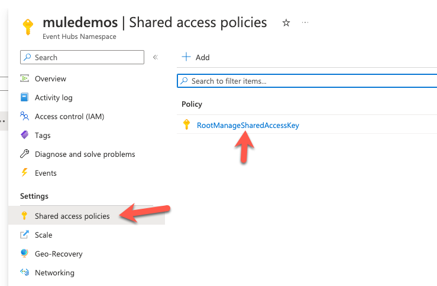
Click on Copy to clipboard next to the Connection string-primary key field. We'll need this later.
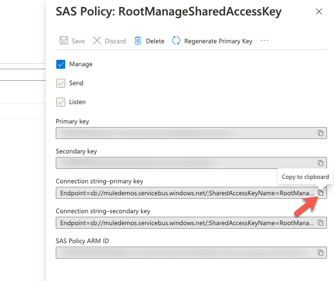
Another property to take note of is the Consumer groups. The default one to use when you set the connection is $Default
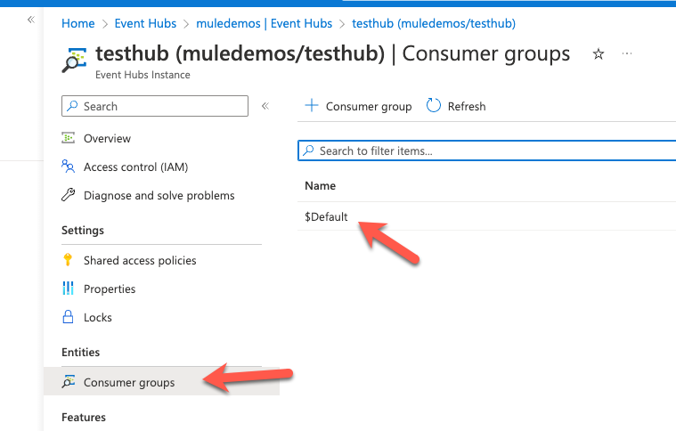
Download the project from Github here and then import the project into Anypoint Studio. This project was built with 7.14 and runs on Mule 4.4.0
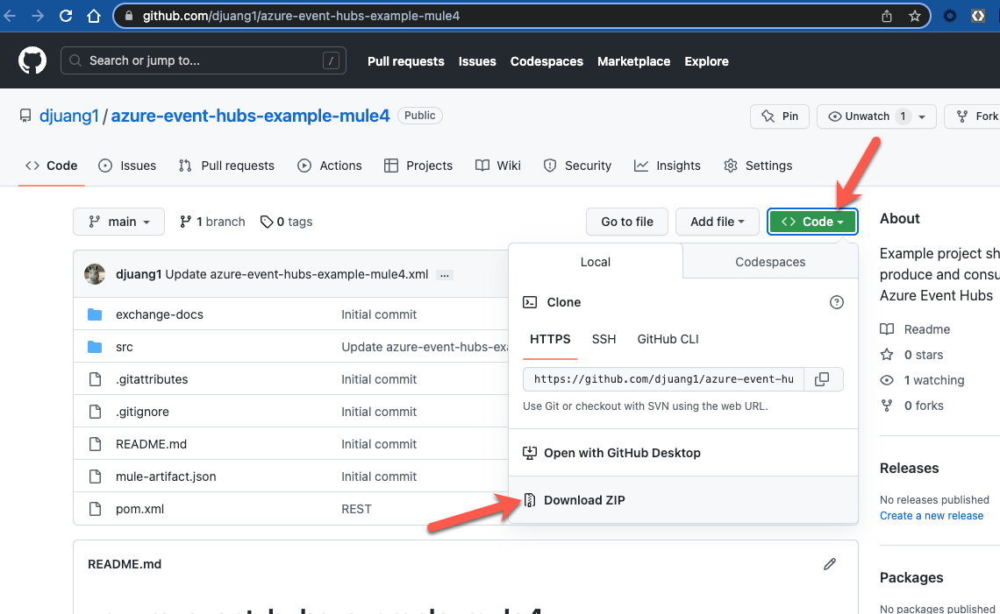
Open the mule-properties.yaml file under src/main/resources and fill in the following fields.
azure:
eventhubs:
namespace: ""
password: ""
topic: ""
keyName: ""
key: ""namespace - Azure Event Hubs namespace that you created earlier (e.g. muledemos)
password - This is the Connection string-primary key that you copied from the Shared Access Policies section earlier. (e.g. Endpoint=sb://)
topic - This is the name of the Event Hub you created (e.g. testhub)
keyName - This can be the name of the default key or a new key that you created in the Shared Access Policies section (e.g. RootManageSharedAccessKey)
key - This is the primary key for the keyName above (e.g. D70M9+iK4JZcM+zcTmGMY/DDpxTGVBOWFBIFFA7HyMw=)
Save the changes to the file and switch back to the azure-event-hubs-example-mule4.xml file.
Let's look at the configurations before we run the project. Switch to the Global Elements tab and open the Apache Kafka Producer configuration.
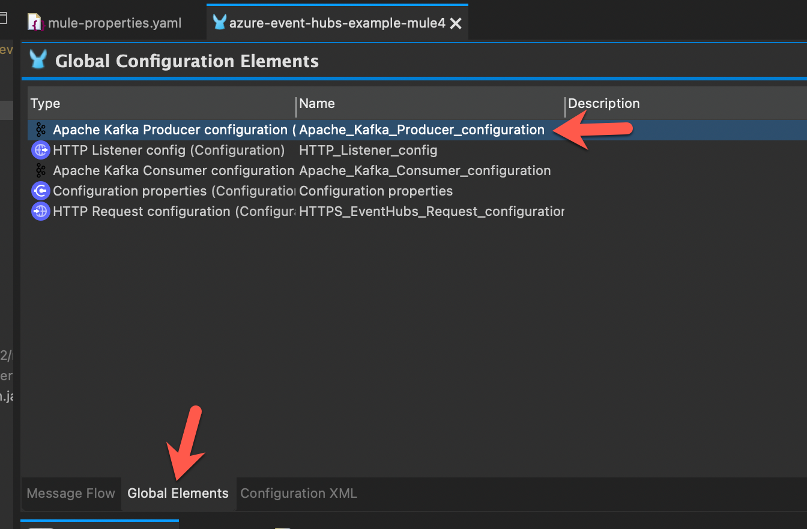
Somethings to point out:
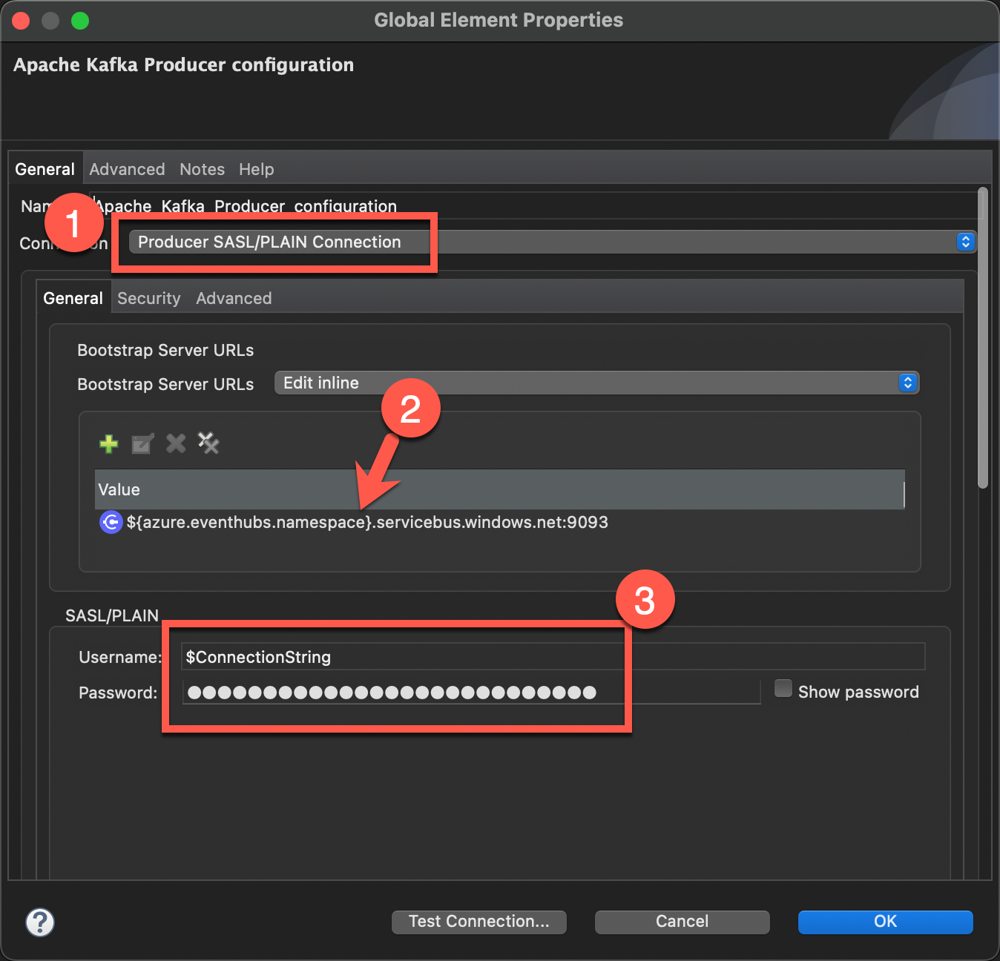
.servicebus.windows.net:9093$ConnectionString and the password is the Connection string-primary key that we copied from the Shared Access Policies section earlier.If you scroll down, you find the name of the topic which is the name of the Event Hub that we created.
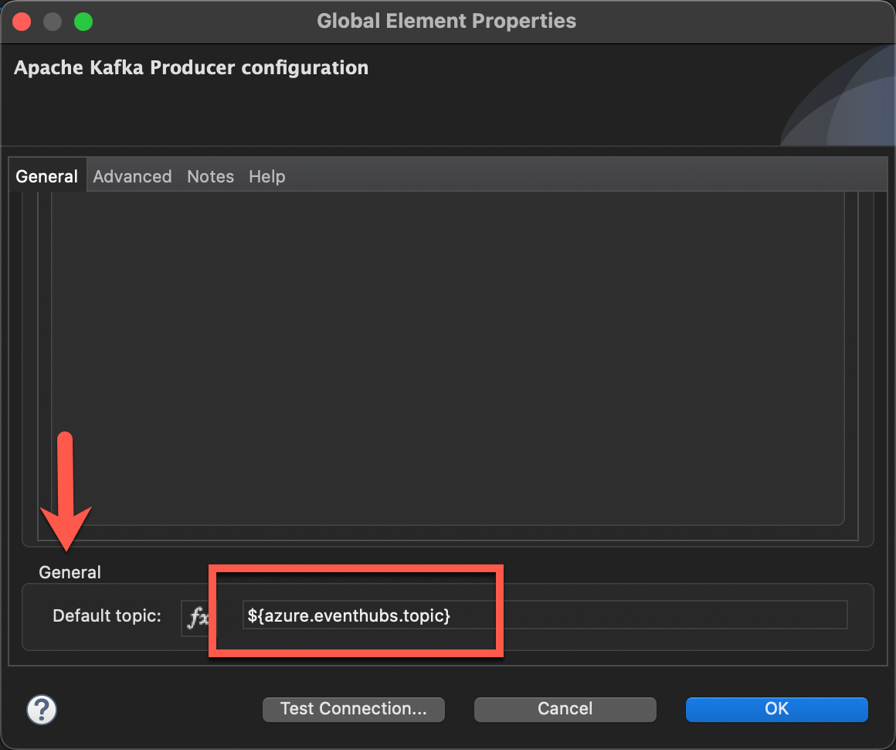
Go ahead and click on Test Connection... to make sure your connection settings are correct for your Event Hub environment. Once you get the Test connection successful message, let's run the project now.
Close the properties window and then switch back to the Message Flow. Right-click on the canvas and select Run project
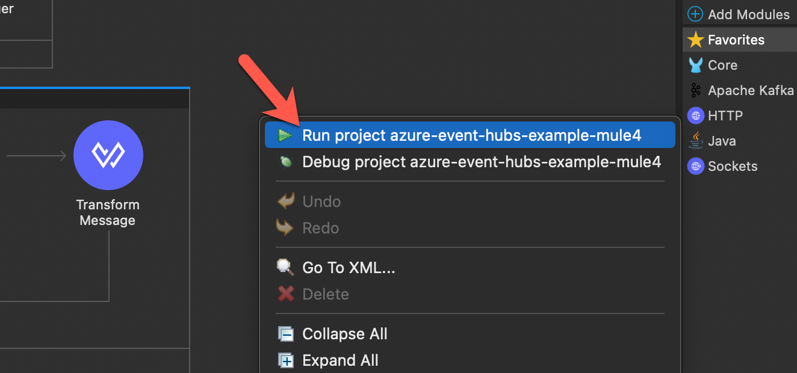
When the project is successfully deployed, move on to the next step.
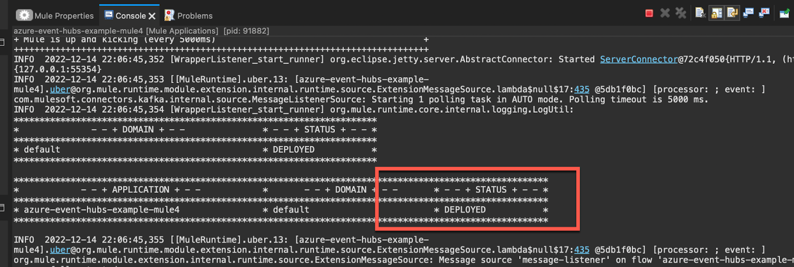
The Kafka example consists of two flows. The flow with the Publish operation will write a string to the Event Hub. The flow with the Message Listener will pick that message off the Event Hub and write it to the console.
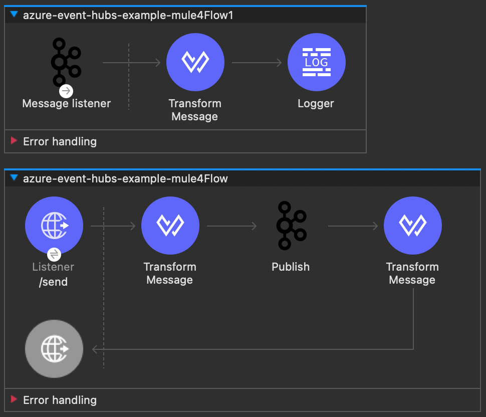
Let's go ahead and test the flow out. Switch to your browser and navigate to the following URL
http://localhost:8081/sendYou should get the following response with a different timestamp of course.
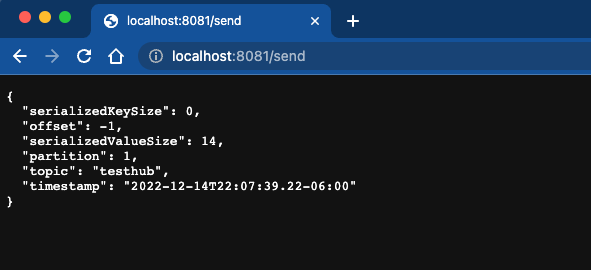
The Publish operation sends the string "Hello World!"
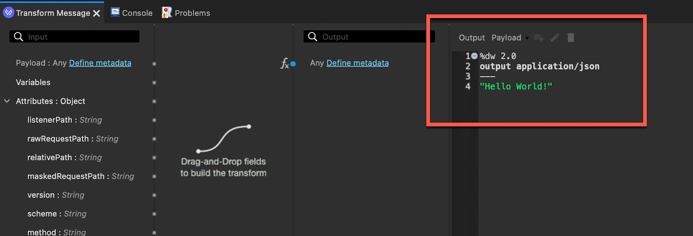
Switching back to Anypoint Studio, you'll see the string in the Console tab when the Message Listener operation receives the message that was published to the Event Hub and writes it to the console.
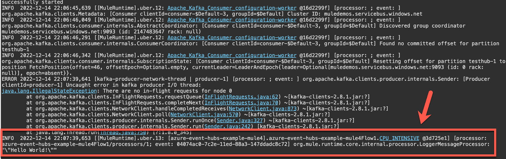
This flow is an example of how to write a message to the Event Hub using the REST APIs that are exposed. You'll notice in the flow that we use the Invoke static operation from the Java module. In order to call the REST API, we need to generate a SAS Token.
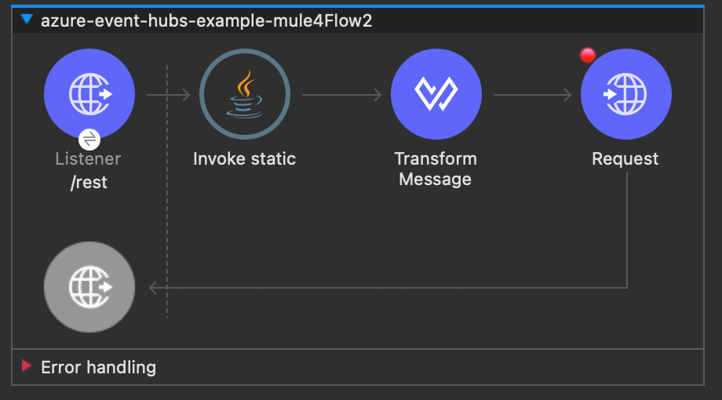
Go to src/main/java and open the SASToken.java file.
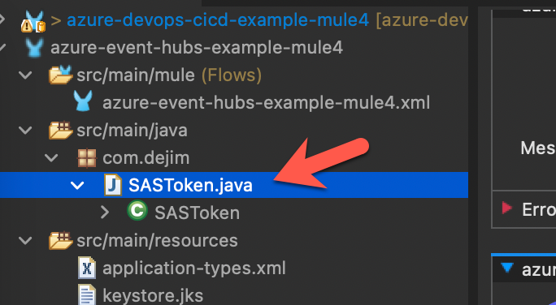
In the file, find the GetSASToken function. You'll see that we pass in the resource URI, key name, and key to generate the token.
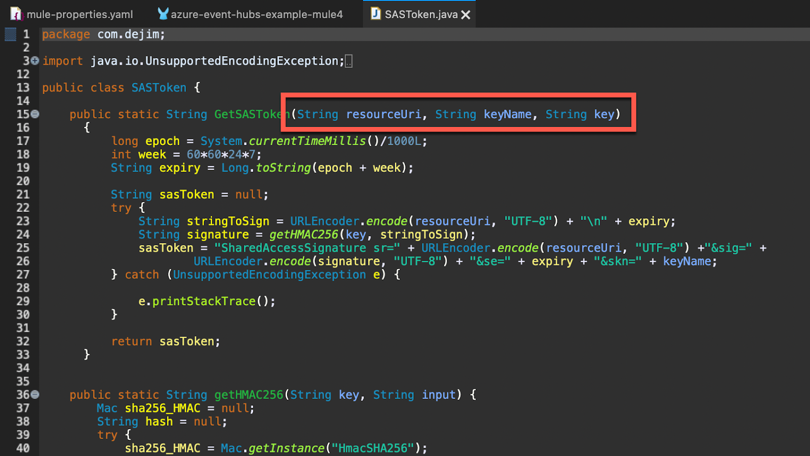
Switch back to the azure-event-hubs-example-mule4.xml file and select the Transform Message after the Invoke Static operation. You'll see that we're passing a JSON string to the REST API.
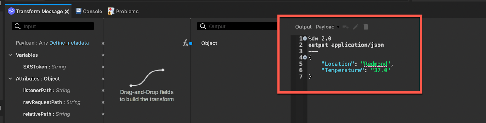
Jump to your browser and navigate to the following URL
http://localhost:8081/restYou'll see the following response if you setup everything correctly.
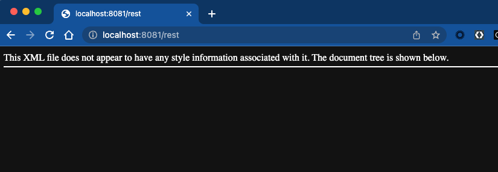
Additionally, when you switch back to Anypoint Studio, the console log will show the JSON string. This is because the Message Listener is still listening to the Event Hub and picked up the message that we just wrote.
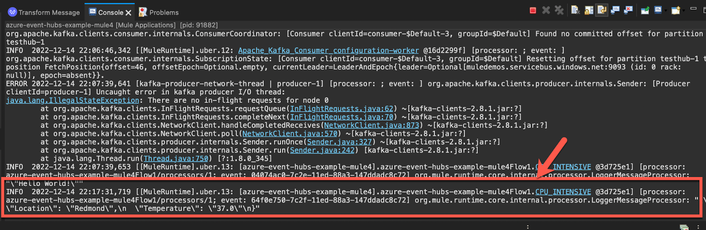
MuleSoft makes it easy to connect to Azure Event Hub even without a connector. Using either Kafka or the REST API, we can take data from any system or source and write it to Azure Event Hub to be transformed and stored by using any real-time analytics provider or batching/storage adapters.
You can use the example project for your own use to connect your data and services to Azure Event Hub. Look for a Azure Event Hubs connector in Anypoint Exchange soon